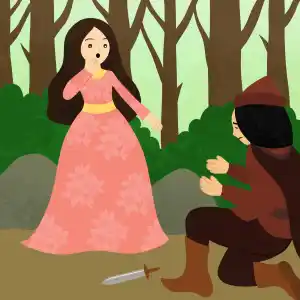
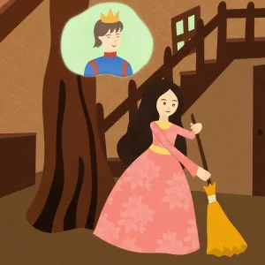
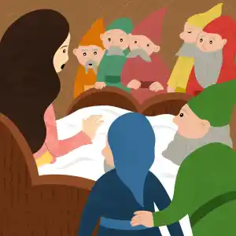
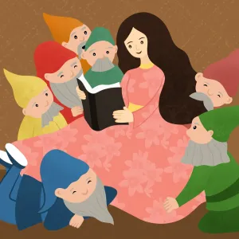
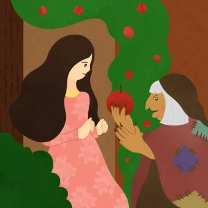

Once upon a time, a princess named Snow White lived in a castle with her father, the King, and her stepmother, the Queen. Her father had always said to his daughter that she must be fair to everyone at court. Said he: “People come here to the castle when they have a problem. They need the ruler to make a fair decision. Nothing is more important than to be fair.”
The Queen, Snow White’s stepmother, knew how much this meant to her husband. At the first chance, she rushed to her magic mirror. “Mirror, mirror, on the wall,” said the Queen. “Who is the fairest of them all?”
“Snow White is the fairest of them all!” said the Magic Mirror.
part 2
“What?!” yelled the Queen. “No one is more fair than I! The Queen must have the best of everything - everyone knows that. What could be more fair?”
“Snow White is the fairest of them all!” repeated the Magic Mirror.
“What do you know – you’re a mirror!” roared the Queen. And she stormed off.
Still, the Queen was bothered. So bothered was she that the Queen decided to be rid of the girl, once and for all.
“I cannot wait another day!” she declared. The Queen called for her servant, a huntsman. “Find a reason to take Snow White deep into the woods,” she said, pointing her long finger at the servant. “Then kill her.”
The huntsman was shocked! But she was the Queen and what could he do? The next day he took Snow White into the woods. As he drew his knife to slay her, Snow White turned around.

part 3
“Look,” she said, taking something out of her pocket. “You have always been good to me.” She held in front of him six perfect arrowheads that she had carefully shaped. “Do you like them?” she said. “They are for you.”
“Snow White,” said the huntsman. “I cannot do this!”
“Of course you can take these,” said Snow White.
"That's not what I meant," said the servant. He dropped to his knees. “How can I say this to you? The Queen, your step-mother, ordered me to kill you,” he said. “But I cannot!”
“She did what?” Snow White called out with alarm.
“You must run away!” said the huntsman. “Far into the woods. Now! And never come back to the castle!”
Snow White turned and ran into the woods as fast as she could. Deeper and deeper she ran. It was getting dark, and the wolves were starting to howl. She tripped and her skirt was torn. Tall tree branches seemed to reach down to the very ground to grab her. She was scratched, bleeding and scared. Yet she ran on and on.
Then all of a sudden, far away, there was a light. Who was living so deep in the woods? She stepped up closer. It was a cottage! Yet no sound came from the cottage, only light from the windows.
part 4
“Hello?” she said, knocking softly on the door. “Hello?” No answer. The door was a little bit open. She opened it some more and stepped in. “Hello, is anyone home?”
She looked around. What a mess! She had never seen a messier living room.
“This cottage may be the biggest mess I ever saw,” she thought. “But it's a roof over my head for tonight. Maybe if I clean up around here, I can earn my sleep.”
As she cleaned, she thought of someone she already missed. Before her father had re-married, she and a Prince who lived in the next kingdom were getting to know each other. They would take long walks in the royal garden and tell each other stories, and laugh.
After the Queen had moved into the castle, her stepmother had made a new rule – no more visitors. Now the Prince had to slip over the palace gate in secret. He would call out to her from under her window and they could talk a bit that way. It wasn’t as good as the long walks but it was the best they could manage.
Now that she had to run away from home, would she ever see him again?
After Snow White cleaned up the living room, she went upstairs. On the second floor, there were seven little beds lined up in a row, as if for children. Tired from cleaning, Snow White yawned and lay across all seven of the beds. Soon she fell fast asleep.
In the meantime, the Seven Dwarfs were heading home from a long day of working in the jewel mines. When they opened the door, you can imagine their surprise when they saw their cottage all cleaned up!
“What kind of magic is this?” said one of the Dwarfs, whose name was Doc.
“I wouldn’t mind more magic like this!” said another of the Dwarfs with a smile. His name was Dopey.
“We'd better check upstairs,” said another Dwarf, whose name was Grumpy. “Something is fishy around here, that’s for sure.”

part 5
There – lying across all their beds, was a young lady, fast asleep.
“Who are you?” said all the Dwarfs at once.
Snow White bolted awake. The Seven Dwarfs could tell she was as surprised as they were. Soon they all relaxed and shared their stories.
Snow White learned their names – Bashful, Doc, Dopey, Grumpy, Happy, Sleepy, and Sneezy. She told them all about her step-mother. That her stepmother had tried to get the huntsman to kill her, that the huntsman had set her free in the woods, and that she could never go back home again.
“Stay here, with us,” said Bashful.
“That’s sweet,” said Snow White. “But if I were to stay here at your home, I would have to do something for all of you.”
“You already cleaned up our place,” said Sneezy.
Ezoic
“Keeping the house clean will be easy,” said Snow White, “as long as we all pitch in. I will let everyone know what part they can do, and I will do my share too, of course.”
“That’s fair,” said Happy.
“But there must be something else I can do for you,” said Snow White.
The Seven Dwarfs shrugged.
“Do you know how to read?” said Doc. "We have these books filled with wonderful tales and would love to be able to read them." And so it was agreed that Snow White would teach them how to read.

part 6
To celebrate their new friendship, Snow White and the Seven Dwarfs sang and danced the night away.
The next morning before they left for work, the Seven Dwarfs warned Snow White she must not open the door to anyone. After all, who knows what evil her stepmother might do? The princess nodded in agreement, and the Dwarfs left the house. The princess prepared her first reading lesson. She also prepared a good hot meal for the Seven Dwarfs when they returned home that night. And so the days passed.
Back at the castle, the Queen marched up to her mirror. “Mirror, mirror on the wall," she demanded. "Who is the fairest of them all?”
“Snow White is the fairest of them all!” said the Magic Mirror.

part 7
“I would like very much to buy your apple,” said Snow White. “But I have no money.”
“That fine comb in your hair will make a good trade,” said the old woman.
“Well, all right then!” said Snow White. She took the comb out of her hair and gave it to the old woman, who then gave her the apple. Snow White took a big bite. Alas, the fruit was poisoned! At once, Snow White fell to the ground in a deep sleep.
“YES!” shouted the Queen, pumping the air with her fists.
Just then the door flew open. In marched the Seven Dwarfs, home from the day's work. Shocked indeed they were to find Snow White lying on the floor and what must be her stepmother beside her, laughing!
They chased that evil Queen out the door, and into the storm. Up to the very top of a mountain they chased her. All of a sudden, lightning hit the mountain! The Queen fell, and she was never seen again.
But there was nothing to help poor Snow White. She stayed absolutely still in her deep sleep. The Seven Dwarfs gently lifted her into a glass coffin. Day and night they kept watch over her.
One day, the Prince happened to pass through. Ever since he had learned that Snow White was missing at the castle, he was searching for her, far and wide. Now he had finally found her, but in such a state! The Prince pulled open the glass coffin. Her face seemed so fresh, even in that deep sleep.

part 8
He gently took one of Snow White's hands in his own and kissed it. At once, Snow White’s eyes opened! With Love's First Kiss, the evil Queen's spell was forever gone. Now nothing stood in the way for Snow White and the Prince to be together forever. They returned to the Prince's kingdom and lived happily ever after.